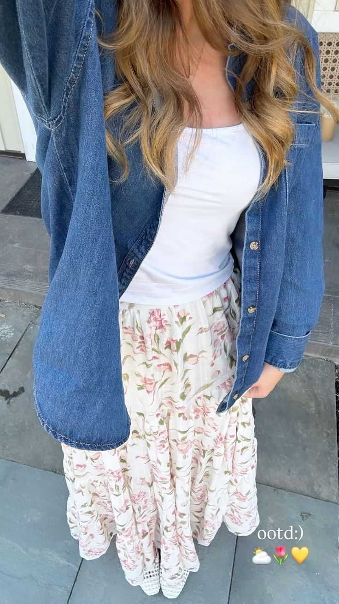
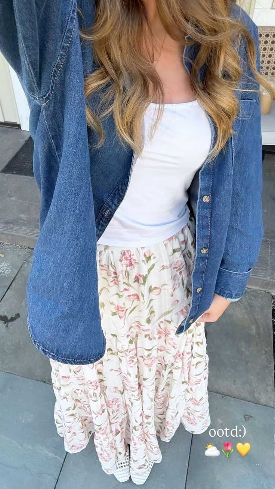
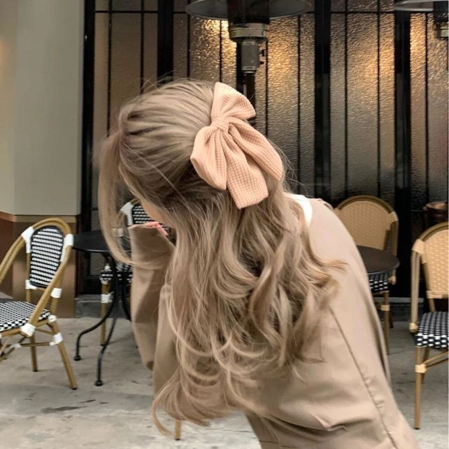
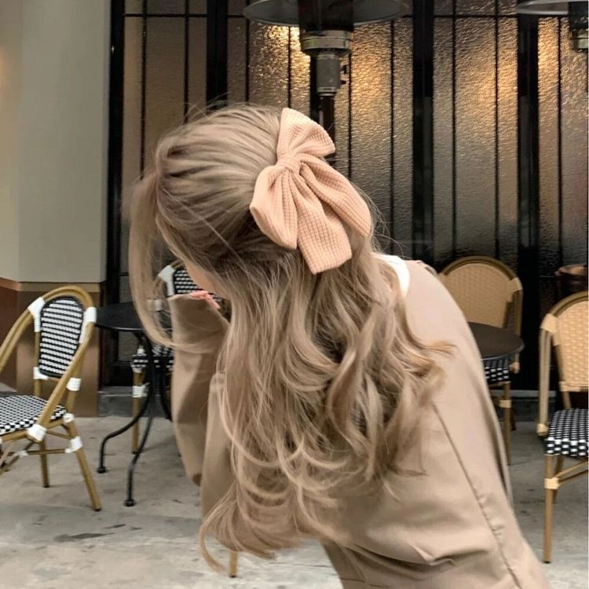

Madison Adeline Lucas
19
Edad Rosa
Color 21/05
Cumpleaños
Edad Rosa
Color 21/05
Cumpleaños
Es dulce, amigable y quizás demasiado ingenua.
Mayor miedo: Ser asquerosa y poco importante para Dios, debido a un secreto que guarda desde hace muchos años.
Mayor sueño: Dejar de luchar.
Hobbies: Manualidades, enseñar a los niños
 


 
